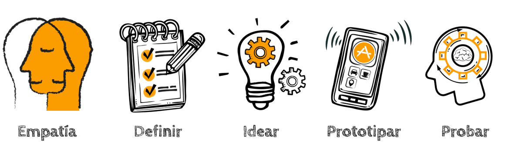

DESIGN THINKING
¿Qué es Design Thinking?
Design Thinking centra sus esfuerzos en la resolución de múltiples problemas a través del diseño.
Lo esencial de esta “metodología” es que se interesa particularmente por el usuario.
En un inicio, Design Thinking se centraba en la labor de creación de productos; sin embargo,
conforme ha pasado el tiempo y en la medida en que las empresas han observado su eficiencia,
esta “metodología” se ha implementado en múltiples ámbitos, ya no solo enfocados en
productos o en diseñadores.

¿Cuantas fases tiene Design Thinking?
Design Thinking tiene 5 etapas:
- Empatizar
- Definir
- Idear
- Prototipar
- Testear